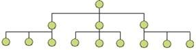

An organizational structure is how you define the relationships between pieces of content. Successful structures allow users to predict where they will find information on the site. It’s important to take into account user expectations and implement consistent methods of organizing and displaying information so that users can extend their knowledge from familiar pages to unfamiliar ones. The three main organizational structures are Hierarchical, Sequential, and Matrix.
Choosing a Structure
In some cases, it may be beneficial to use one organizational structure over another but in many cases it may be helpful to use all three in a complementary manner.
Hierarchical Structures
In Hierarchical Structures, sometimes referred to as tree structures or hub-and-spoke structures, there is a top down approach or parent/child relationships between pieces of information. Users start with broader categories of information (parent) and then drill further down into the structure to find narrower, more detailed information (child).
Many users are familiar with structuring information in hierarchies because they see these structures on a daily basis in the way businesses have a formed their lead leadership structure, the way project plans are set-up, and so on.
Sequential Structures
Websites with Sequential Structures require users to go step-by-step, following a specific path through content.
An example of this type of structure is when a user is attempting to purchase something or are taking a course online. Sequential structures assume that there is some optimal ordering of content that is associated with greater effectiveness or success.
Matrix Structures
A Matrix Structure allows users to determine their own path since content is linked in numerous ways. This type of structure takes full advantage of the principles behind hypertext, or HTML. For example, one user could choose to navigate through a set of content based on date while another navigates based on topic.
Database Model
The Database Model takes a bottom-up approach. The content within this structure leans heavily on the linkages created through the content’s metadata. This type of model facilitates a more dynamic experience generally allowing for advanced filtering and search capabilities as well as providing links to related information in the system that has been properly tagged.
Creating Sustainable Structures
Site architecture has a long term impact on the site. It’s important to put thought into the structure and ensure that it takes into account content updates in the future. Site managers should keep in mind the following when structuring a site:
- Allow room for growth. Creating a site that can accommodate the addition of new content within a section (left image) as well as entire new sections (right image).
- Avoid structures that are too shallow or too deep. Striking a balance is never easy is an important goal of any architecture. Structures that are too shallow require massive menus. Users rely on information architects to create logical groupings to facilitate movement throughout the site. In contrast, structures that are too deep bury information beneath too many layers. These structures burden the user to have to navigate through several levels to find the content that they desire.
References
- Jesse James Garrett’s The Elements of User Experience: User-Centered Design for the Web and Beyond (2nd Edition)
- Peter Morville and Louis Rosenfeld’s Information Architecture for the World Wide Web: Designing Large-Scale Web Sites
-
Web Style Guide 3rd Edition’s Site Structure